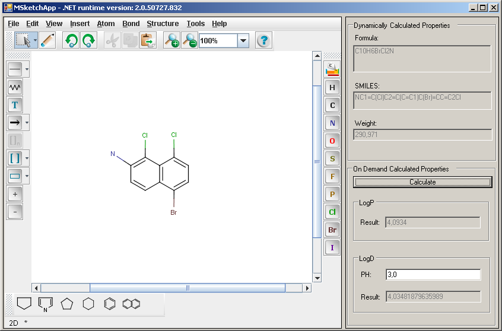

This example demonstrates how to use a .NET UserControl (in particular the UserControl for MarvinSketch) that has been derived from a Marvin Java GUI component. The current version of Marvin has in place the implementation necessary for embedding MarvinSketch in .NET application. If you need more support either in terms of functionality or in terms of the covered GUI components or both, do not hesitate to drop a post on our Technical Support Forum in the Structure editing, viewing and file formats section.
This example demonstrates how to embed a Marvin Java GUI component into a .NET form and how to add .NET implementations to Java event listeners (callbacks).
The application consists of one WinForm which has the MarvinSketch component (MSketchControl) embedded on the left side and a number of .NET controls on the right side.

The MSketchControl component practically offers the same functionality as the corresponding MarvinSketch Java application: it let's you visually create and manipulate molecular structures.
On the right of the WinForm, the first three .NET TextBoxes display properties of the molecular structure being edited. The property values are updated "on the fly", automatically as the structure in the MarvinSektch control changes as a result of user interaction.
The second group of .NET components on the right of the WinForm demonstrates the use of the calculation plugins. The calculations are performed only after the "Calculate" button is pressed.
The tools mentioned in the Developers' Guide must be installed.
examples/ChemAxon.NET/GUI/MSketchApp
directory which will be the starting directory for the sample GUI
application. The following DLLs are required:
marvin15.8.10.0_JnbProxies_1.1.dll or
marvin15.8.10.0_JnbProxies_2.0.dll depending on the version of your
.NET runtime. You can download
them from our website.
JNBShare.dll and JNBSharedMem.dll are both
part of the standard JNBridge package. The directories
1.x-targeted and 2.0-targeted in the JNBridge
package contain different versions of both of them targeting different
versions of the .NET runtime. Use those located in the directory
matching the version of your .NET runtime.
JNBTools.dll in the lib directory of the
uncompressed Marvin installation package.
init.bat batch file in the
examples/ChemAxon.NET directory and modify the value
of the PROCESSOR_TYPE environment variable to match your
environment.
sdkvars.bat batch file located in the
Bin directory of your .NET SDK installation to
set the required environment variables.
examples/ChemAxon.NET/GUI/MSketchApp directory.
build.bat batch file in the
examples/ChemAxon.NET/GUI/MSketchApp directory.
registrationTool.exe /n /SEin order to register JNBridge in the Standard Edition mode. (There is one registrationtool.exe in the 1.x-targeted and one in the 2.0-targeted directory. You have to pick the one corresponding to your .NET version.)
examples/ChemAxon.NET/GUI/MSketchApp/MSketchApp.exe.config file and change the
values, where necessary, to match your environment.
The tag configuration/jnbridge/dotNetToJavaConfig contains
information the JNBridge needs to know how to channel calls made the the Marvin
.NET proxies. You have to set the attributes of the
configuration/jnbridge/dotNetToJavaConfig
tag as follows:
scheme: leave it sharedmem as is;
jvm: should point to the bin\server\jvm.dll file in the JRE directory;
jnbcore: should point to jnbcore.jar under the JNBridge installation directory;
bcel: should point to bcel-5.1-jnbridge.jar under the JNBridge installation directory;
classpath: should include a semicolon-separated list of the
directory path to the required Java libraries:MarvinBeans.jar in the lib directory of the
uncompressed Marvin Beans package;
aloe.jar in the same directory as MarvinBeans.jar.
jnbtools.jar in the same directory as MarvinBeans.jar.
The class chemaxon.jnbridge.marvin.example.MSketchControl
encapsulates the behavior of MarvinSketch as a
System.Windows.Forms.UserControl. MSketchControl has
a default a constructor and constructor that accepts a boolean parameter. When
this parameter is true, the Java menu bar is displayed in the Java GUI
components (this is also the behaviour of the default constructor). When this
parameter is false, the Java menu bar is not displayed (the popup menus
triggered by right mouse click will work though).
We recognize that the developer of a .NET GUI application will clearly want to have a uniform menu system -- and this menu system obviously needs to be a standard .NET menu system. Currently, the recommended approach for the .NET developers to implement .NET GUI menus is to implement the menu actions from scratch. The core functionality of the Java control embedded in MSketchApp is the graphical representation of the molecular structures (and this is actually the only functionality relevant for this demo). This core functionality is, in turn, accessible through the API of the GUI components involved. Consequently, implementing "from scratch" the action for the Edit/Bonds/Aromatize submenu, for example, would involve: (1) obtaining the Molecule instance from MolPanel, (2) calling the "aromatize()" tranformation function on the Molecule instance and (3) setting the transformed Molecule instance back into MolPanel.
In addition to its constructor,
its main public interfaces provide a means to register implementations of the
java.beans.PropertyChangeListener and
java.awt.event.ActionListener interfaces to handle events produced
by MarvinSketch as a result of user interaction. The implementation of the
MSketchControl class in source code form is made available only
for the curious. The typical developer will not need to know the implementation.
The chemaxon.jnbridge.marvin.example.MSketch WinForm has two functions:
The PropertyChangeEvent is handled in the method propertyChange of
MSketch. A change in the mol property
indicates that the molecular structure displayed in MarvinSketch has been
changed. MSketch uses this event to update the TextBoxes displaying selected
properties of the compound.